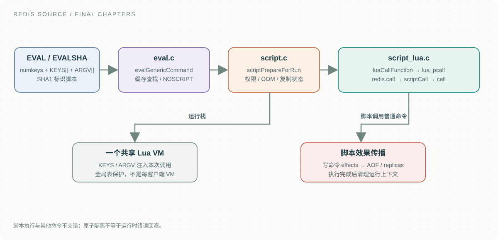
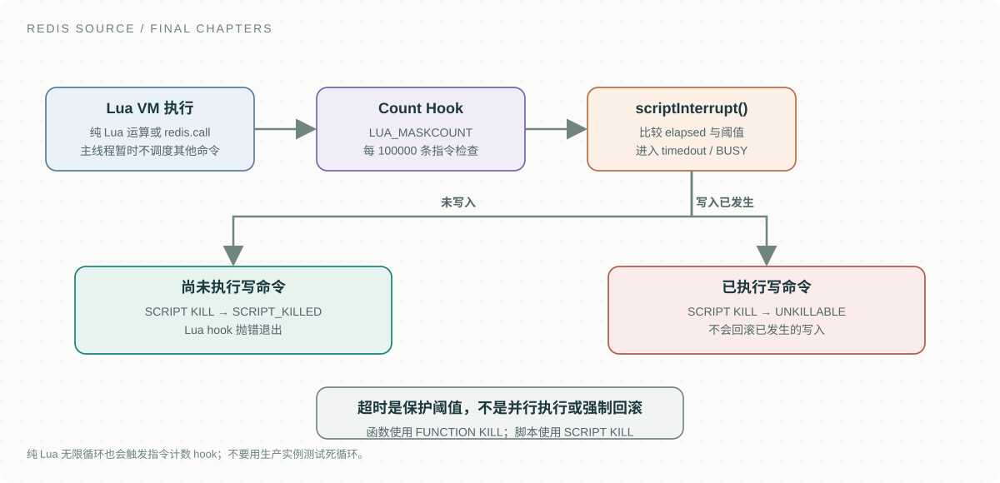

Chapter 26 / Redis Source Anatomy
Lua 脚本与事务：EVAL、Functions、MULTI 与 WATCH
以 Redis 7.2.4 源码追踪 Lua 5.1 VM、EVAL/EVALSHA、超时 hook、effects replication、Redis Functions 和 MULTI/EXEC/WATCH，厘清原子隔离、错误与回滚的真实边界。
脚本与事务解决的不是同一个问题
Redis 的命令模型通常是一条命令一次执行；当业务需要“读当前值、判断条件、再写入”时，多个独立命令之间可能插入其他客户端的写入。Redis 为此提供两类机制：Lua/Functions 把业务逻辑放到服务端执行；MULTI/EXEC 把一组已经确定的命令先排队，再连续执行。两者都能避免其他客户端命令插入到执行中间，但控制流、部署方式和失败语义并不相同。
本章固定实现版本为 Redis 7.2.4。Lua 引擎是嵌入式 Lua 5.1；脚本管理在 eval.c/script.c，Lua C 绑定在 script_lua.c，Redis Functions 的库管理在 functions.c，事务队列在 multi.c。理解这些文件的职责边界，才能避免把 EVAL 缓存、函数库持久化和事务队列混为一谈。

EVAL / EVALSHA：SHA1 是缓存定位符，不是脚本版本管理
客户端发送 EVAL script numkeys key... arg... 时，Redis 先解析 numkeys，确保数量不超过剩余参数，再把参数切分为 KEYS[] 和 ARGV[]。evalGenericCommand() 根据脚本 SHA1 生成 Lua registry 中的函数名，检查函数是否已编译；缓存未命中时，EVAL 可以编译并缓存脚本，而 EVALSHA 只能按 SHA 查找，找不到就返回 NOSCRIPT。
SCRIPT LOAD 只负责加载脚本并返回 SHA1，不执行脚本；SCRIPT EXISTS 检查当前实例缓存；SCRIPT FLUSH 清空缓存。脚本缓存是易失的：重启、故障切换到未加载脚本的副本或 SCRIPT FLUSH 都可能让缓存消失。客户端必须实现 NOSCRIPT 恢复逻辑，不能把 SHA1 当成永久部署 ID。
local stock = tonumber(redis.call('GET', KEYS[1]) or '0')
local quantity = tonumber(ARGV[1])
if not quantity or quantity <= 0 then
return redis.error_reply('quantity must be a positive integer')
end
if stock < quantity then
return 0
end
local remaining = stock - quantity
redis.call('SET', KEYS[1], remaining)
return remaining
# 将上面的 Lua 保存为 reserve.lua 后：
redis-cli -p 6390 SET stock:sku-1 10
redis-cli -p 6390 --eval reserve.lua stock:sku-1 , 3
redis-cli -p 6390 SCRIPT LOAD "$(cat reserve.lua)"
# 将上一步 SHA 放入变量，再使用：
redis-cli -p 6390 EVALSHA <sha1> 1 stock:sku-1 2脚本中访问的键必须通过 KEYS 显式声明，非键参数放入 ARGV。这不仅让命令的 key 位置可被 Redis 识别，也为 Cluster 路由、ACL 和命令审计提供边界。不要在 Lua 中根据业务字符串动态拼出未声明的 Redis key。
共享 Lua VM 与沙箱：一个实例不是每个客户端一份解释器
scriptingInit() 创建并保存 Lua lua_State，通过 luaRegisterRedisAPI() 注册 Redis API，再把全局表和可达表递归设置为只读保护。因而 Redis 7.2.4 的脚本不是“每个客户端各有一台 Lua 虚拟机”；一个实例共享 Lua 引擎，执行时在 VM 栈中装载本次调用的参数和函数。
对 EVAL，luaCallFunction() 把 Redis key 参数转换为 KEYS 表，把其他参数转换为 ARGV 表，并调用 lua_pcall()。Redis Functions 也使用 Lua 执行引擎，但按函数注册方式传递 keys/args。共享 VM 并不意味着脚本可以把可变全局变量当成跨调用状态存储：全局环境被保护，脚本应使用局部变量，并把持久状态明确写入 Redis 数据结构。
redis.call() 遇到 Redis 命令错误会把错误抛给 Lua；redis.pcall() 则把错误以 Lua 表的形式返回，供脚本显式判断。返回值会经过 Redis 的 Lua-to-RESP 转换；整数、字符串、数组、nil 和错误对象的映射规则必须按 Redis Lua API 处理，不能假定 Lua 的所有类型都能原样返回。
| 机制 | 职责 | 不应误解为 |
|---|---|---|
| lua_State | 执行 Lua 字节码和栈 | 每客户端独立状态机 |
| KEYS / ARGV | 本次调用参数边界 | 可随意访问任意动态 key |
| redis.call | 执行 Redis 命令，错误抛出 | 事务回滚 |
| redis.pcall | 返回错误对象以便处理 | 错误被自动忽略 |
| SCRIPT LOAD | 编译并缓存脚本 | 持久化脚本部署 |
超时检测不是只在 redis.call 返回时检查
Redis 7.2.4 的 luaCallFunction() 在启用脚本超时监控时，通过 lua_sethook() 设置 Lua 指令计数 hook，类型为 LUA_MASKCOUNT，计数间隔是 100000 条 Lua 指令。luaMaskCountHook() 调用 scriptInterrupt() 检查运行时长。因此纯 Lua 的计算循环也会周期性触发 hook；“只要不调用 redis.call 就永远不能检查超时”是错误的。
超过 lua-time-limit（Redis 7.2.4 默认 5000ms）后，Redis 进入 timed-out/busy 状态并处理必要事件；这并不意味着脚本自动被安全杀死。客户端可以用 SCRIPT KILL 请求中止尚未执行写命令的脚本；一旦脚本已修改数据，Redis 返回 UNKILLABLE，因为强行终止会留下部分效果。Functions 使用 FUNCTION KILL。

超时阈值是故障保护，不是推荐脚本预算。应把单次脚本限制为有界的 key 数量和数据规模；大批量任务应拆分成小批次，或移到后台任务系统。不要在生产实例运行死循环来测试 SCRIPT KILL。
离线机制模型，仅用于理解控制流；不会连接 Redis 实例。
脚本原子执行、命令效果复制与错误后的数据状态
Redis 所说的脚本原子执行，核心是执行期间不会与其他客户端命令交错。它不意味着像关系数据库事务那样具有自动 rollback。脚本先执行一次成功的写命令、随后再遇到 WRONGTYPE 或 Lua runtime error 时，先前已经发生的写入不会因为脚本返回错误而自动撤销。
redis-cli -p 6390 DEL lab:partial
redis-cli -p 6390 EVAL "redis.call('SET', KEYS[1], 'written'); redis.call('LPUSH', KEYS[1], 'x')" 1 lab:partial
# 脚本返回 WRONGTYPE，但下面的 GET 仍会读到 written：
redis-cli -p 6390 GET lab:partialRedis 7.0 起脚本复制采用 effects replication：传播脚本执行产生的写命令效果，而不是让副本重新运行任意脚本代码。Redis 7.2.4 的脚本运行上下文维护传播目标和命令效果，脚本中的命令仍经过普通命令检查、ACL、写入限制和调用路径。不要把早期 Redis 的 verbatim script replication 行为套到 7.2.4。
Cluster 场景中还必须遵守 key 声明与 hash slot 约束；多 key 脚本应把相关键显式放入 KEYS，并按部署拓扑安排 hash tag。脚本执行期间主线程被占用，因此一个大循环会放大所有客户端的尾延迟。
Redis Functions：把服务端逻辑变成可部署、可持久化的库
Redis Functions 在 Redis 7.0 引入，目标是解决 EVAL 脚本“由客户端携带、缓存随时可能丢失、调用方必须处理 NOSCRIPT”的运维负担。函数被组织到命名 library 中，库通过 FUNCTION LOAD 部署，函数通过 FCALL 或只读的 FCALL_RO 调用。库中的函数有稳定名称，库整体更新，而不是逐个函数原地修改。
#!lua name=inventory
local function reserve(keys, args)
local quantity = tonumber(args[1])
if not quantity or quantity <= 0 then
return redis.error_reply('quantity must be positive')
end
local stock = tonumber(redis.call('GET', keys[1]) or '0')
if stock < quantity then
return 0
end
return redis.call('DECRBY', keys[1], quantity)
end
redis.register_function{
function_name = 'reserve_stock',
callback = reserve
}
# 保存为 inventory.lua，再加载和调用：
redis-cli -p 6390 -x FUNCTION LOAD REPLACE < inventory.lua
redis-cli -p 6390 FCALL reserve_stock 1 stock:sku-1 2
redis-cli -p 6390 FUNCTION LIST与 EVAL 脚本缓存不同，Function library 是数据库的一部分，会随 RDB/AOF 持久化并从主节点复制到副本。函数仍然在 Redis 的脚本执行模型中运行，仍然具有原子执行期间阻塞服务的代价，也仍然没有运行时错误自动回滚。Function flags（例如 no-writes）让服务器在执行前知道函数是否允许写入；只读副本上的只读调用必须正确声明标志。
| 对比项 | EVAL / EVALSHA | FUNCTION / FCALL |
|---|---|---|
| 部署主体 | 应用负责分发脚本 | 运维/发布流程管理库 |
| 标识方式 | 脚本 SHA1 | 用户定义函数名 + library |
| 持久性 | 缓存易失，需处理 NOSCRIPT | 库持久化并复制 |
| 更新粒度 | 脚本源码独立加载 | library 整体替换 |
| 执行语义 | Lua 原子执行，阻塞 | Lua 函数原子执行，阻塞 |
| 错误处理 | 无自动 rollback | 无自动 rollback |
MULTI：命令入队不是执行，mstate 保存的是待执行命令
事务状态属于客户端对象。MULTI 设置 CLIENT_MULTI；之后的普通命令不立即调用 handler，而是进入 queueMultiCommand()，把当前命令指针、参数数组和参数长度等信息转移到客户端的 mstate.commands 队列，并向客户端回复 QUEUED。队列不是一份 SQL 计划，而是待执行的 Redis 命令及其参数。
WATCH 是乐观并发控制，不会锁住 key。Redis 在 DB 的 watched-key 索引中记录客户端；写命令通过 touchWatchedKey() 将相关客户端标记为 CLIENT_DIRTY_CAS。在 Redis 7.2.4，EXEC 前还会检查 watched key 是否已过期，因此 TTL 到期也可能使事务 abort。
redis-cli -p 6390 MULTI
redis-cli -p 6390 SET account:1 100
redis-cli -p 6390 INCRBY account:1 20
redis-cli -p 6390 GET account:1
redis-cli -p 6390 EXEC上面命令需在同一连接上执行；真实客户端应复用同一个 socket/连接对象完成 MULTI、队列命令和 EXEC。每条命令的独立 redis-cli 进程不是一个事务会话。事务命令排队阶段不执行写入；只有 EXEC 才会逐条调用命令执行路径。
EXEC：先判定事务是否可提交，再连续执行命令队列
execCommand() 首先确认客户端处于 MULTI；随后检查 WATCH 是否被触碰/过期以及是否有排队阶段错误。若 CLIENT_DIRTY_CAS，EXEC 返回 null array，表示乐观锁条件不满足；若 CLIENT_DIRTY_EXEC，EXEC 返回 EXECABORT，表示队列阶段已有命令错误。两种失败原因不同，不应混成一个错误状态。
提交通过后，Redis 取消 WATCH，设置 server.in_exec，按队列顺序恢复每条命令的 argv/argc/cmd，再调用普通 call()。这一段执行期间其他客户端命令不会插入。命令执行完成后恢复客户端状态并丢弃事务队列。
| 错误类型 | 发生阶段 | EXEC 行为 |
|---|---|---|
| 命令名/参数/语法或队列阶段错误 | MULTI 排队时 | 标记 DIRTY_EXEC，EXEC 返回 EXECABORT |
| WATCH key 被修改或过期 | EXEC 前检查 | 标记 DIRTY_CAS，EXEC 返回 null array |
| 运行时 WRONGTYPE/OOM 等命令错误 | EXEC 执行队列时 | 该元素返回错误，后续命令仍继续 |
| 业务条件不满足 | 应用脚本/命令设计 | 必须显式返回业务结果，不会自动回滚 |
可以用以下隔离实验观察运行时错误不会终止整个队列：
redis-cli -p 6390 SET tx:key 10
# 同一 redis-cli 交互连接：
MULTI
SET tx:key 20
LPUSH tx:key item
INCR tx:key
EXEC
GET tx:key
# EXEC 返回数组：OK、WRONGTYPE、整数 21；GET 读到 21。这里 LPUSH 的 WRONGTYPE 不会撤销前面的 SET，也不会阻止后面的 INCR。这就是 Redis 事务“不支持 rollback”的关键事实。
ACID 边界与选型：原子隔离不等于数据库回滚
用 ACID 评价 Redis 时，应把“执行不交错”和“失败后回滚”分开。MULTI/EXEC 在 EXEC 阶段串行执行，Lua/Functions 在脚本运行期间独占命令执行路径；但运行时错误不回滚已经执行的写命令。数据类型约束和命令检查可帮助保持数据结构合法，但跨命令业务不变量仍由应用逻辑负责。持久性取决于 RDB/AOF、fsync 策略和底层存储，不由 MULTI 或 Lua 本身保证。
| 需求 | 更合适的机制 | 主要代价/边界 |
|---|---|---|
| 需要 if/else、循环、读后判断再写 | Lua / Redis Functions | 单线程阻塞；必须限制执行时长 |
| 命令序列在客户端已确定，无分支逻辑 | MULTI / EXEC | 命令先排队；无 runtime rollback |
| 多个客户端竞争一个状态 | WATCH + MULTI / EXEC 或 Lua | WATCH 是乐观检查；冲突需重试 |
| 逻辑需要跨应用共享、稳定命名和部署 | Redis Functions | library 发布与兼容性管理 |
| 耗时外部 I/O、长计算 | 不要放进 Lua/事务 | 用异步任务/Module blocked client/外部 worker |
脚本和函数适合短小、数据本地、原子性强的业务逻辑；MULTI 适合一组固定命令的连续执行；WATCH 用于需要先在客户端计算、再验证 key 未变化的乐观流程。三者都不替代幂等、重试上限、业务补偿和持久化策略。
离线机制模型，仅用于理解控制流；不会连接 Redis 实例。
隔离实验：同一实例比较脚本缓存、函数库和事务错误
建议在本地 Redis 7.2.4 独立端口执行，先清空测试 key。以下命令展示三个互不相同的生命周期：脚本缓存、函数库和事务队列。
# 1) EVAL / SCRIPT LOAD / EVALSHA
redis-cli -p 6390 SCRIPT LOAD "return redis.call('INCRBY', KEYS[1], ARGV[1])"
redis-cli -p 6390 SCRIPT EXISTS <sha1>
redis-cli -p 6390 EVALSHA <sha1> 1 lab:counter 5
# 2) Function library (save the #!lua code above to inventory.lua)
redis-cli -p 6390 -x FUNCTION LOAD REPLACE < inventory.lua
redis-cli -p 6390 FCALL reserve_stock 1 stock:sku-1 2
redis-cli -p 6390 FUNCTION LIST
# 3) Runtime error inside MULTI does not rollback or stop later commands
redis-cli -p 6390 SET lab:tx 10
# In one persistent client connection:
MULTI
SET lab:tx 20
LPUSH lab:tx x
INCR lab:tx
EXEC
GET lab:tx
# 4) Script runtime error after a successful write is not a rollback
redis-cli -p 6390 EVAL "redis.call('SET', KEYS[1], 'partial'); redis.call('LPUSH', KEYS[1], 'x')" 1 lab:script-error
redis-cli -p 6390 GET lab:script-error脚本与函数库示例应在同一个测试实例运行；Functions 需使用 FUNCTION LOAD 注册后再 FCALL。事务的 MULTI/EXEC 必须通过同一条客户端连接执行。脚本示例最后一条 GET 预期返回 partial，这是理解“不自动回滚”的关键验收点。
源码定位与阅读顺序
建议先从 eval.c:evalGenericCommand() 追到 scriptPrepareForRun()，再进入 script_lua.c:luaCallFunction() 和 luaMaskCountHook()；之后单独阅读 functions.c 的库管理，再切换到 multi.c:queueMultiCommand()、execCommand() 和 touchWatchedKey()。这样能把“脚本管理”“Lua VM”“事务队列”三条实现链拆开。
所有实现路径均锁定 Redis 7.2.4；官方文档用于解释用户可见语义，不能替代版本源码。
源码与参考
正文中的实现事实均标明版本。官方文档用于核对公开语义，固定版本源码用于核对具体实现。
- Redis 7.2.4 eval.c：evalGenericCommand 与 EVAL/EVALSHA 路径
- Redis 7.2.4 script.c：执行上下文、超时中断和 SCRIPT KILL
- Redis 7.2.4 script_lua.c：共享 Lua VM、count hook 和 luaCallFunction
- Redis 7.2.4 functions.c：Function library 生命周期
- Redis 7.2.4 multi.c：queueMultiCommand、execCommand、touchWatchedKey
- Redis 官方 Eval Scripts：Lua 5.1、脚本缓存与原子执行
- Redis 官方 Functions：库持久化、复制、flags 与 FCALL